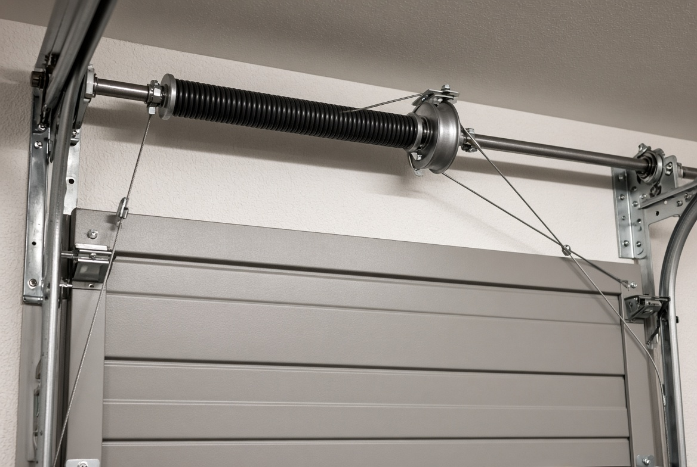

Broken spring
A gap in the coil, or a door that will not lift. We replace the pair and rebalance.
Most “the opener died” calls are a spring or a cable. Forcing the door can bend a panel or drop it. Tell us what it is doing and we will say whether it is a same-visit repair.

A gap in the coil, or a door that will not lift. We replace the pair and rebalance.
The door sits crooked or a cable is slack. We reset the door only after the spring tension is safe.
Often a disconnected trolley, bad safety eye, or stripped gear. We test the door by hand first.
Nylon rollers quiet a door that squeals on the way up. We replace worn hinges before a panel folds.
Bottom seal and perimeter vinyl stop the draft and the mice. A cheap fix before winter.
One dented section can often be swapped. If the skin is creased through the insulation, a new door is the honest answer.